Load Data (TMT)
Here, we are directly working with the SummarizedExperiment data. For more information on how to create the SummarizedExperiment from a proteomics data set, please refer to the “Get Started” vignette.
The example TMT data set originates from (Biadglegne et al. 2022).
data("tuberculosis_TMT_se")
se <- tuberculosis_TMT_seOverview of the Data
To get an overview on the number of NAs, you can simply use the
function get_NA_overview():
get_NA_overview(se, ain = "log2")
#> Total.Values NA.Values NA.Percentage
#> <int> <int> <num>
#> 1: 6020 1945 32.30897To get an overview on the number of samples per sample group or
batch, you can simply use the function
plot_condition_overview() by specifying the column of the
meta-data that should be used for coloring. By default (condition =
NULL), the column specified in load_data()will be used.
plot_condition_overview(se, condition = NULL)
#> Condition of SummarizedExperiment used!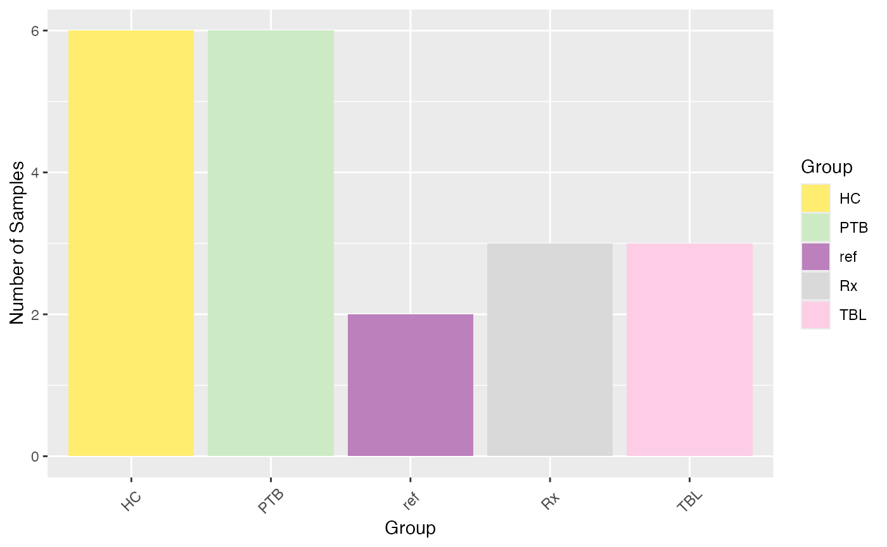
plot_condition_overview(se, condition = "Pool")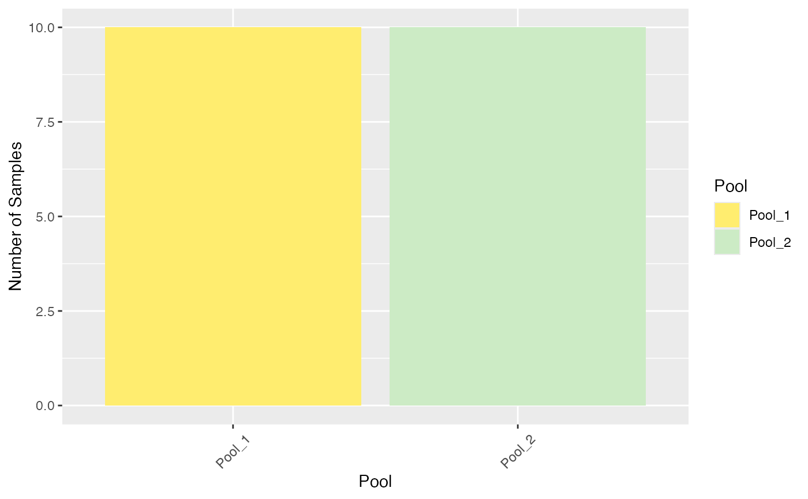
A general overview of the protein intensities across the different
samples is provided by the function plot_heatmap(). The
parameter “ain” specifies the data to plot, currently only “raw” and
“log2” is available (names(assays(se)). Later if multiple normalization
methods are executed, these will be saved as assays, and the normalized
data can be visualized.
available_ains <- names(SummarizedExperiment::assays(se))
plot_heatmap(se, ain = "log2", color_by = c("Pool", "Group"), label_by = NULL, only_refs = FALSE)
#> Label of SummarizedExperiment used!
#> $log2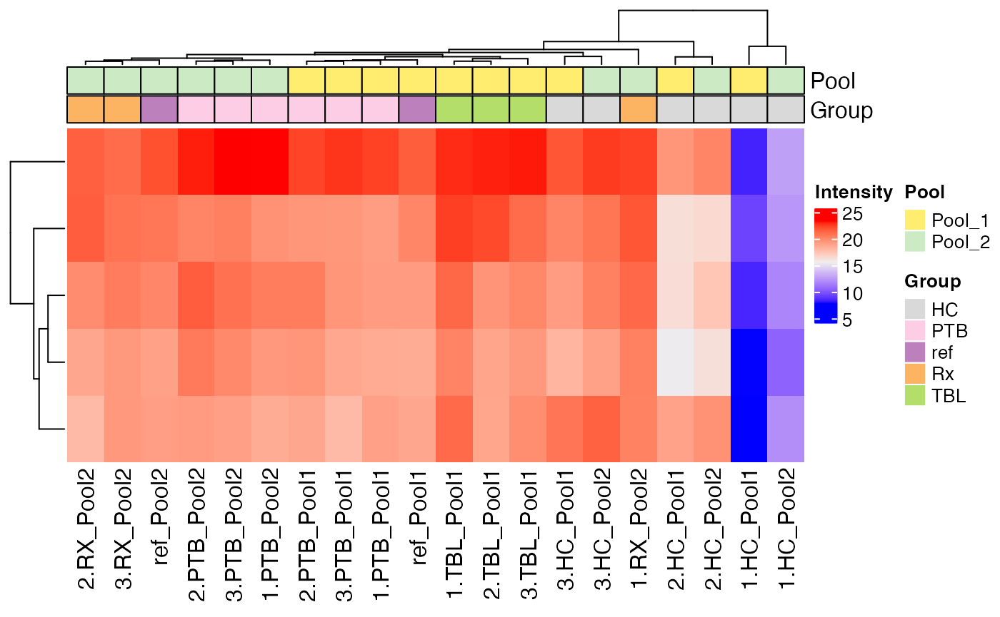
Similarly, an upset plot can be generated to visualize the overlaps between sets defined by a specific column in the metadata. The sets are generated by using non-NA values.
plot_upset(se, color_by = NULL, label_by = NULL, mb.ratio = c(0.7,0.3), only_refs = FALSE)
#> Condition of SummarizedExperiment used!
#> Label of SummarizedExperiment used!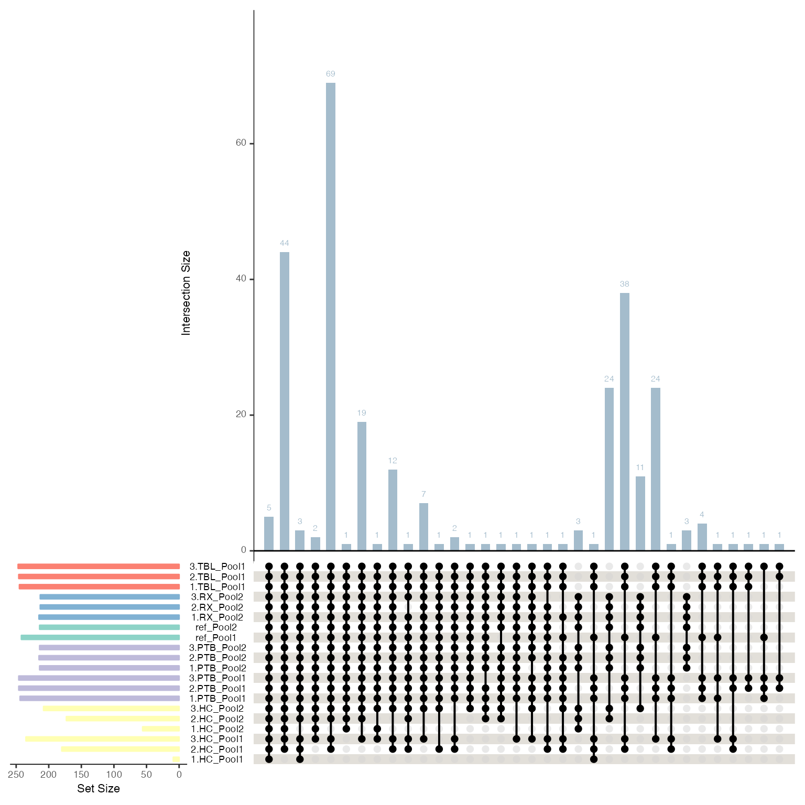
TODO: plot_pairs_panels !
If you are interested in the intensities of specific biomarkers, you
can use the plot_markers_boxplots() function to compare the
distribution of intensities per group. The plot can be generated per
marker and facet by normalization method (facet_norm = TRUE) or by
normalization method and facet by marker (facet_marker = TRUE).
p <- plot_markers_boxplots(se, markers = c("Q92954;J3KP74;E9PLR3", "Q9Y6Z7", "Q68CQ4"), ain = "log2", id_column = "Protein.IDs", facet_norm = FALSE, facet_marker = TRUE)
#> Condition of SummarizedExperiment used!
#> No shaping done.
p[[1]] + ggplot2::theme(axis.text.x = ggplot2::element_text(angle = 90, vjust = 0.5))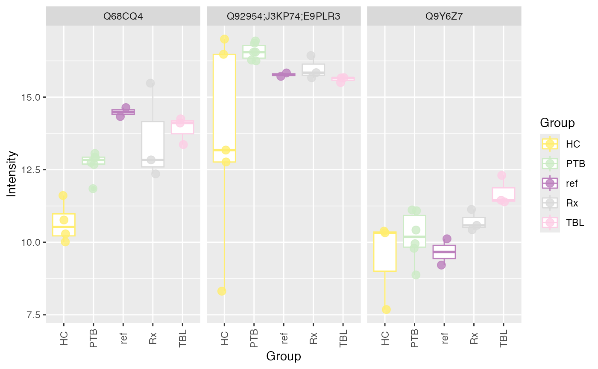
Filter Proteins
Remove Proteins With Missing Values in ALL Samples
se <- filter_out_complete_NA_proteins(se)
#> 13 proteins were removed.Remove Proteins With a Specific Value in a Specific Column
Typically proteins with “+” in the columns “Reverse”, “Only.identified.by.site”, and “Potential.contaminant” are removed in case of a MaxQuant proteinGroups.txt output file.
se <- filter_out_proteins_by_value(se, "Reverse", "+")
#> 17 proteins were removed.
se <- filter_out_proteins_by_value(se, "Only.identified.by.site", "+")
#> 1 proteins were removed.
#se <- filter_out_proteins_by_value(se, "Potential.contaminant", "+")Remove Proteins by ID
If you don’t want to remove for instance all proteins with
“Potential.contaminant == +”, you can also first get the protein ID with
the specific value, check them in Uniprot, and then remove only some by
using the function filter_out_proteins_by_ID().
pot_contaminants <- get_proteins_by_value(se, "Potential.contaminant", "+")
#> 24 proteins were identified.
se <- filter_out_proteins_by_ID(se, pot_contaminants)
#> 24 proteins were removed.Explore Missing Value Pattern
Due to the high amount of missing values in MS-based proteomics data,
it is important to explore the missing value pattern in the data. The
function plot_NA_heatmap() provides a heatmap of the
proteins with at least one missing value across all samples.
plot_NA_heatmap(se, color_by = NULL, label_by = NULL, cluster_samples = TRUE, cluster_proteins = TRUE)
#> Condition of SummarizedExperiment used!
#> Label of SummarizedExperiment used!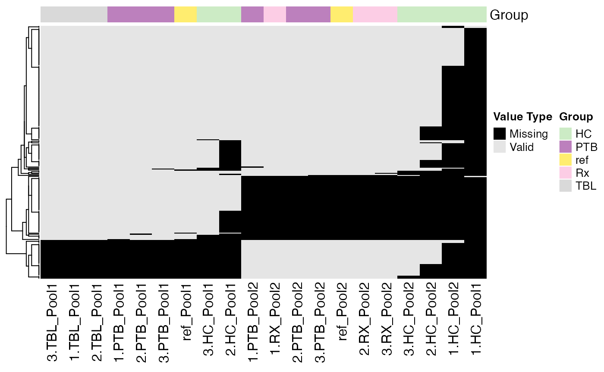
Another way to explore the missing value pattern is to use the
functions plot_NA_density() and
plot_NA_frequency().
plot_NA_density(se)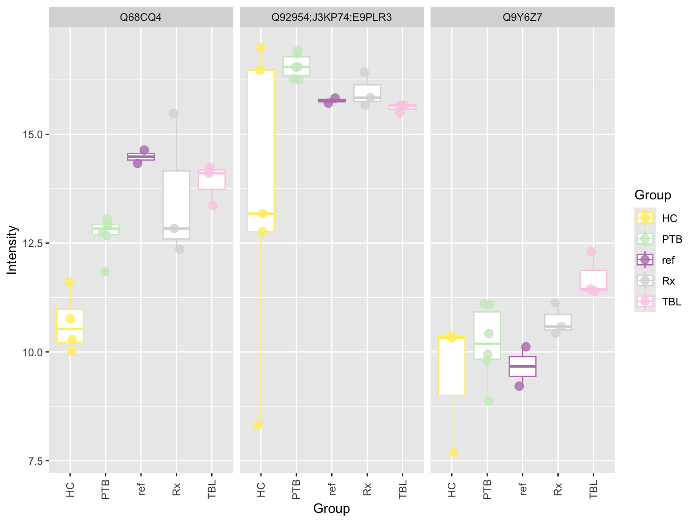
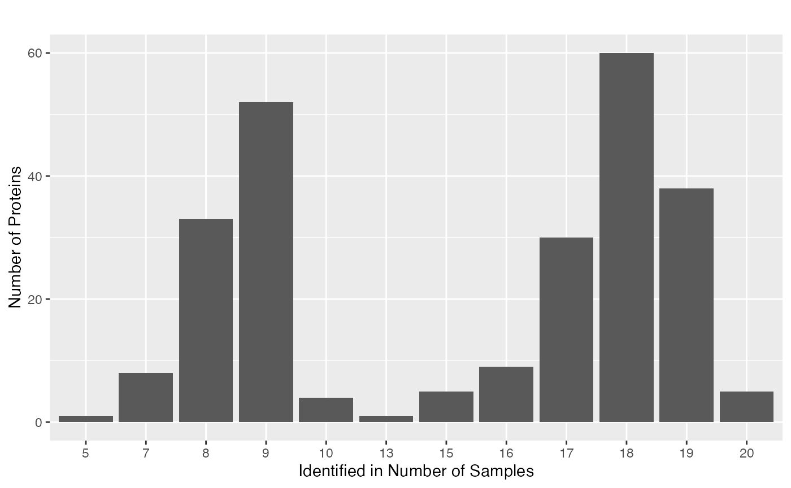
Filter Proteins By Applying a Missing Value Threshold
To reduce the amount of missing values, it is possible to filter
proteins by applying a missing value threshold. The function
filter_out_NA_proteins_by_threshold() removes proteins with
more missing values than the specified threshold. The threshold is a
value between 0 and 1, where 0.7, for instance, means that proteins with
less than 70% of real values will be removed, i.e., proteins with more
than 30% missing values will be removed.
se <- filter_out_NA_proteins_by_threshold(se, thr = 0.7)
#> 99 proteins were removed.
plot_NA_heatmap(se)
#> Condition of SummarizedExperiment used!
#> Label of SummarizedExperiment used!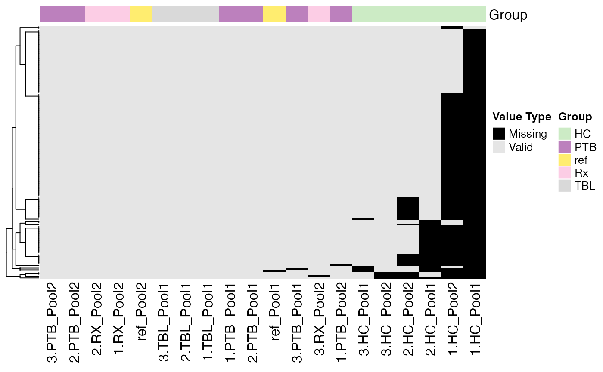
Filter Samples
Following filtering proteins by different criteria, samples can be
analyzed more in detail. PRONE provides some functions, such as
plot_nr_prot_samples() and
plot_tot_int_samples(), to get an overview of the number of
proteins and the total intensity per sample, but also offers the
automatic outlier detection method of POMA.
Quality Control
plot_nr_prot_samples(se, color_by = NULL, label_by = NULL)
#> Condition of SummarizedExperiment used!
#> Label of SummarizedExperiment used!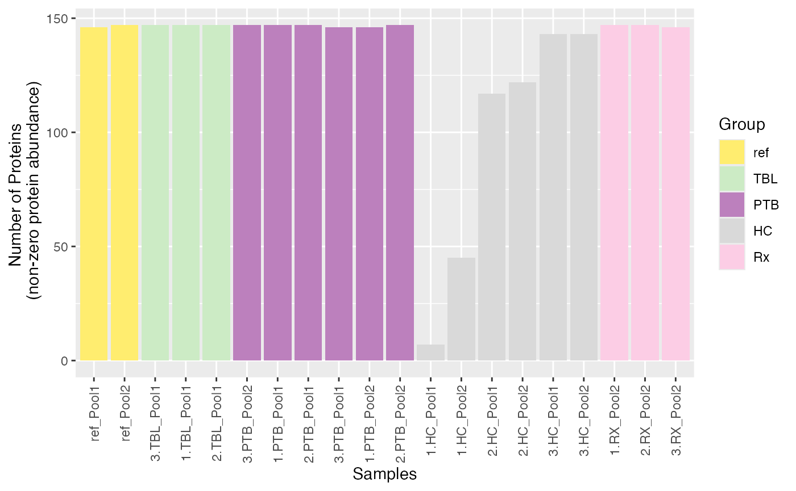
plot_tot_int_samples(se, color_by = NULL, label_by = NULL)
#> Condition of SummarizedExperiment used!
#> Label of SummarizedExperiment used!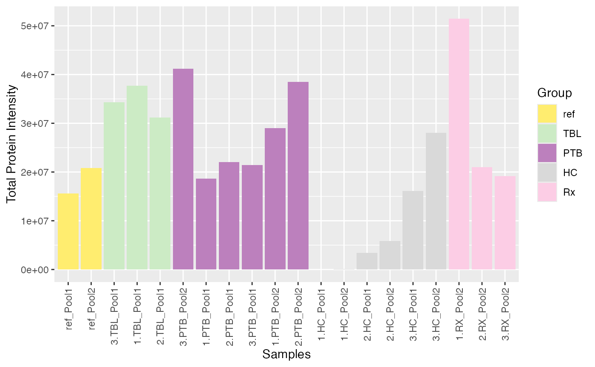
Remove Samples Manually
Based on these plots, samples “1.HC_Pool1” and 1_HC_Pool2 seem to be
outliers. You can easily remove samples manually by using the
remove_samples_manually() function.
se <- remove_samples_manually(se, "Label", c("1.HC_Pool1", "1.HC_Pool2"))
#> 2 samples removed.Remove Reference Samples
And you can remove the reference samples directly using the function
remove_reference_samples(). But attention: possibly you
need them for normalization! That is exactly why we currently keep
them!
se_no_refs <- remove_reference_samples(se)
#> 2 reference samples removed from the SummarizedExperiment object.Outlier Detection via POMA R Package
The POMA R package provides a method to detect outliers in proteomics
data. The function detect_outliers_POMA() detects outliers
in the data based on the POMA algorithm. The function returns a list
with the following elements: polygon plot, distance boxplot, and the
outliers. For further information on the POMA algorithm, please refer to
the original publication (Castellano-Escuder et
al. 2021):
poma_res <- detect_outliers_POMA(se, ain = "log2")
#> Condition of SummarizedExperiment used!
#> Scale for fill is already present.
#> Adding another scale for fill, which will replace the existing scale.
#> Scale for colour is already present.
#> Adding another scale for colour, which will replace the existing scale.
#> Scale for fill is already present.
#> Adding another scale for fill, which will replace the existing scale.
poma_res$polygon_plot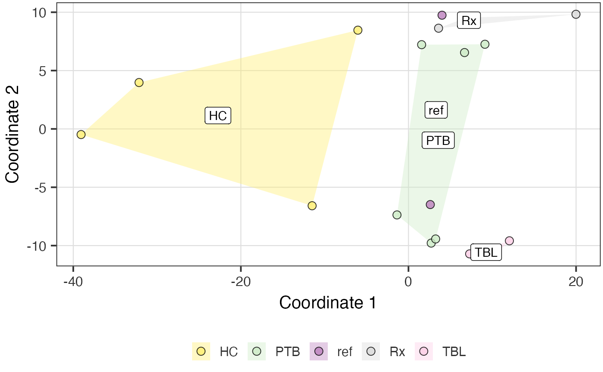
poma_res$distance_boxplot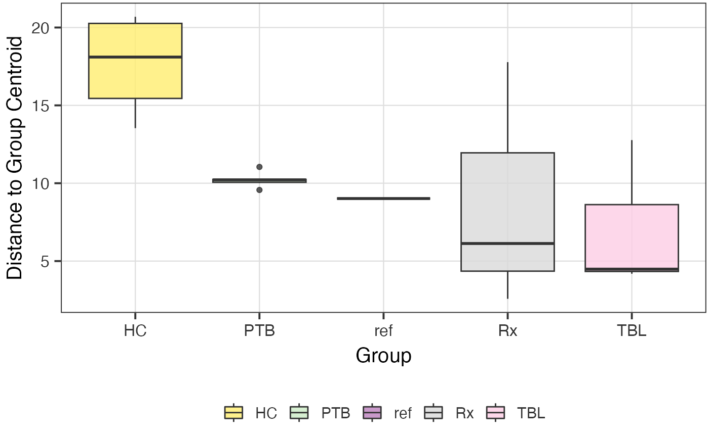
To remove the outliers detected via the POMA algorithm, just put the
data.table of the detect_outliers_POMA() function into the
remove_POMA_outliers() function.
se <- remove_POMA_outliers(se, poma_res$outliers)
#> 1 outlier samples removed.Session Info
utils::sessionInfo()
#> R version 4.4.0 (2024-04-24)
#> Platform: x86_64-apple-darwin20
#> Running under: macOS Ventura 13.6
#>
#> Matrix products: default
#> BLAS: /Library/Frameworks/R.framework/Versions/4.4-x86_64/Resources/lib/libRblas.0.dylib
#> LAPACK: /Library/Frameworks/R.framework/Versions/4.4-x86_64/Resources/lib/libRlapack.dylib; LAPACK version 3.12.0
#>
#> locale:
#> [1] en_US.UTF-8/en_US.UTF-8/en_US.UTF-8/C/en_US.UTF-8/en_US.UTF-8
#>
#> time zone: Europe/Berlin
#> tzcode source: internal
#>
#> attached base packages:
#> [1] stats graphics grDevices utils datasets methods base
#>
#> other attached packages:
#> [1] PRONE_0.99.1
#>
#> loaded via a namespace (and not attached):
#> [1] RColorBrewer_1.1-3 rstudioapi_0.16.0
#> [3] jsonlite_1.8.8 shape_1.4.6.1
#> [5] MultiAssayExperiment_1.30.1 magrittr_2.0.3
#> [7] magick_2.8.3 farver_2.1.2
#> [9] MALDIquant_1.22.2 rmarkdown_2.27
#> [11] GlobalOptions_0.1.2 fs_1.6.4
#> [13] zlibbioc_1.50.0 ragg_1.3.2
#> [15] vctrs_0.6.5 memoise_2.0.1
#> [17] janitor_2.2.0 htmltools_0.5.8.1
#> [19] S4Arrays_1.4.1 SparseArray_1.4.8
#> [21] mzID_1.42.0 sass_0.4.9
#> [23] bslib_0.7.0 htmlwidgets_1.6.4
#> [25] desc_1.4.3 plyr_1.8.9
#> [27] lubridate_1.9.3 impute_1.78.0
#> [29] cachem_1.1.0 igraph_2.0.3
#> [31] lifecycle_1.0.4 iterators_1.0.14
#> [33] pkgconfig_2.0.3 Matrix_1.7-0
#> [35] R6_2.5.1 fastmap_1.2.0
#> [37] snakecase_0.11.1 GenomeInfoDbData_1.2.12
#> [39] MatrixGenerics_1.16.0 clue_0.3-65
#> [41] digest_0.6.35 pcaMethods_1.96.0
#> [43] colorspace_2.1-0 S4Vectors_0.42.0
#> [45] crosstalk_1.2.1 textshaping_0.4.0
#> [47] GenomicRanges_1.56.0 vegan_2.6-6.1
#> [49] labeling_0.4.3 timechange_0.3.0
#> [51] fansi_1.0.6 mgcv_1.9-1
#> [53] httr_1.4.7 abind_1.4-5
#> [55] compiler_4.4.0 withr_3.0.0
#> [57] doParallel_1.0.17 BiocParallel_1.38.0
#> [59] UpSetR_1.4.0 highr_0.11
#> [61] MASS_7.3-60.2 DelayedArray_0.30.1
#> [63] rjson_0.2.21 permute_0.9-7
#> [65] mzR_2.38.0 tools_4.4.0
#> [67] PSMatch_1.8.0 glue_1.7.0
#> [69] nlme_3.1-164 QFeatures_1.14.1
#> [71] gridtext_0.1.5 grid_4.4.0
#> [73] cluster_2.1.6 reshape2_1.4.4
#> [75] generics_0.1.3 gtable_0.3.5
#> [77] preprocessCore_1.66.0 tidyr_1.3.1
#> [79] data.table_1.15.4 xml2_1.3.6
#> [81] utf8_1.2.4 XVector_0.44.0
#> [83] BiocGenerics_0.50.0 foreach_1.5.2
#> [85] pillar_1.9.0 stringr_1.5.1
#> [87] limma_3.60.2 splines_4.4.0
#> [89] circlize_0.4.16 dplyr_1.1.4
#> [91] ggtext_0.1.2 lattice_0.22-6
#> [93] tidyselect_1.2.1 ComplexHeatmap_2.20.0
#> [95] knitr_1.47 gridExtra_2.3
#> [97] IRanges_2.38.0 ProtGenerics_1.36.0
#> [99] SummarizedExperiment_1.34.0 stats4_4.4.0
#> [101] xfun_0.45 Biobase_2.64.0
#> [103] statmod_1.5.0 MSnbase_2.30.1
#> [105] matrixStats_1.3.0 DT_0.33
#> [107] stringi_1.8.4 UCSC.utils_1.0.0
#> [109] lazyeval_0.2.2 yaml_2.3.8
#> [111] evaluate_0.24.0 codetools_0.2-20
#> [113] MsCoreUtils_1.16.0 tibble_3.2.1
#> [115] BiocManager_1.30.23 cli_3.6.2
#> [117] affyio_1.74.0 systemfonts_1.1.0
#> [119] munsell_0.5.1 jquerylib_0.1.4
#> [121] Rcpp_1.0.12 GenomeInfoDb_1.40.1
#> [123] png_0.1-8 XML_3.99-0.16.1
#> [125] parallel_4.4.0 pkgdown_2.0.9
#> [127] ggplot2_3.5.1 dendsort_0.3.4
#> [129] AnnotationFilter_1.28.0 scales_1.3.0
#> [131] affy_1.82.0 ncdf4_1.22
#> [133] purrr_1.0.2 crayon_1.5.2
#> [135] POMA_1.14.0 GetoptLong_1.0.5
#> [137] rlang_1.1.4 vsn_3.72.0